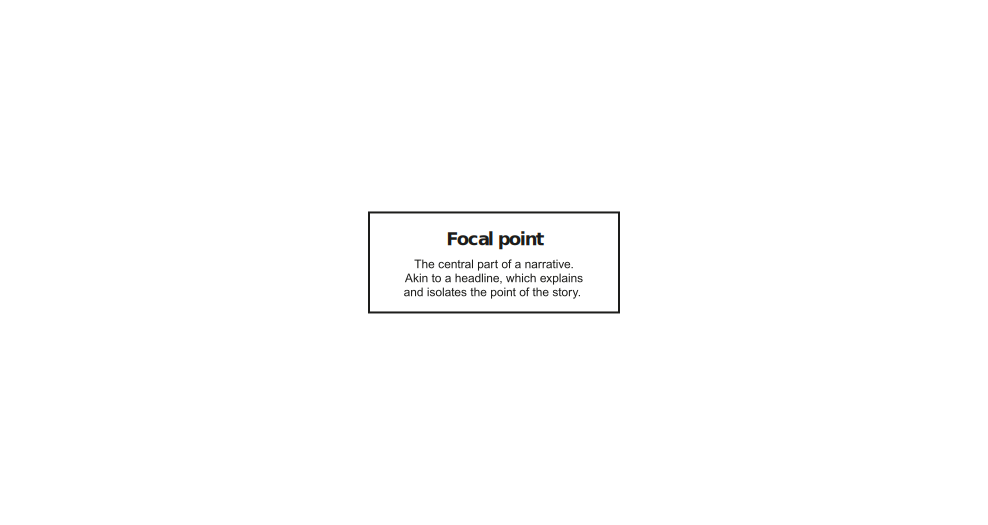
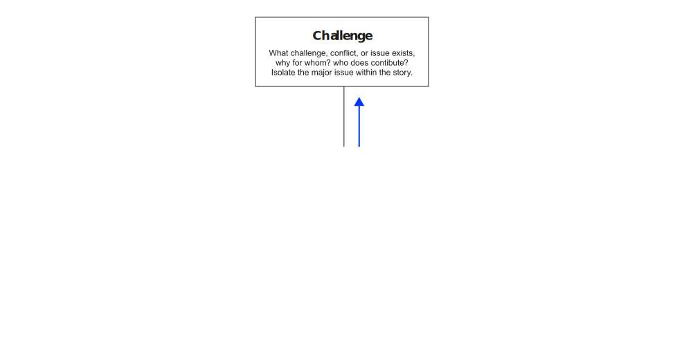
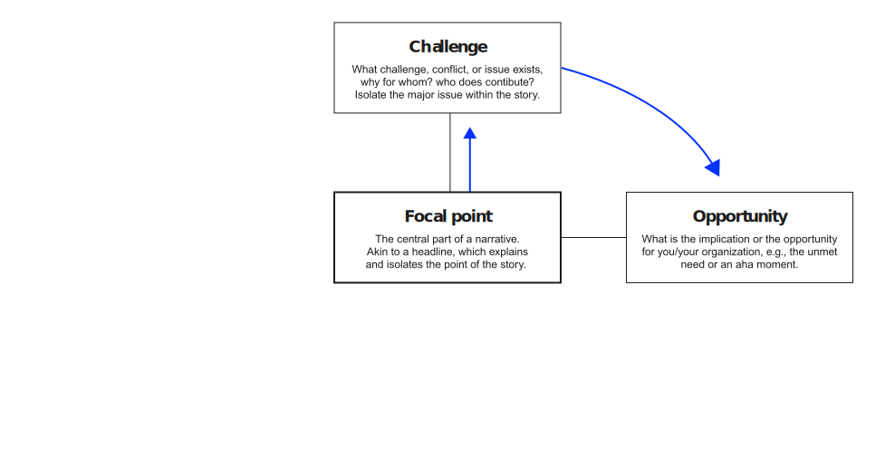
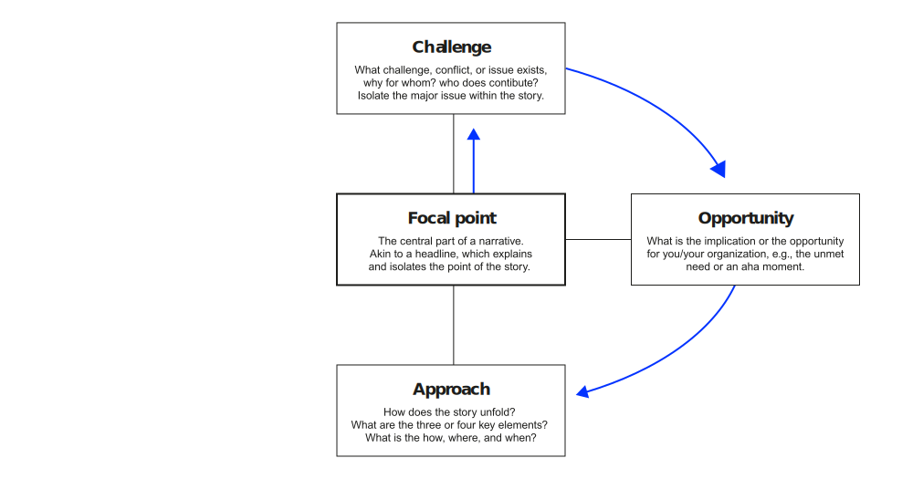
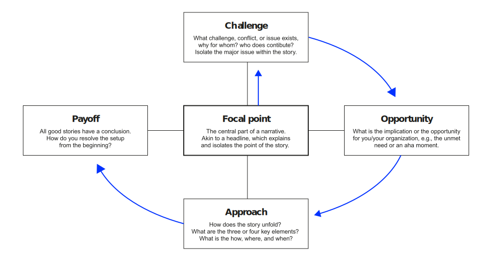

How to communicate with maximum impact?
Neu-Ulm University of Applied Sciences
February 14, 2024
The most powerful person in the world is the storyteller.
The storyteller sets the vision, values and agenda of an entire generation that is to come. Steve Jobs
A leader “is is one or more people who selects, equips, trains, and influences one or more follower(s) who have diverse gifts, abilities, and skills and focuses the follower(s) to the organization’s mission and objectives, causing the follower(s) to willingly and enthusiastically expend spiritual, emotional, and physical energy in a concerted coordinated effort to achieve the organizational mission and objectives.” Winston and Patterson (2006, p. 8)
How will you inspire others to be part of your vision if you can’t communicate it?
Storytelling is a necessity of leadership.
I’ve learned that people will forget what you said, people will forget what you did, but people will never forget how you made them feel. Maya Angelou — American writer, poet, and civil rights activist
I’ve learned that the ability to articulate your story or that of your company is crucial in almost every phase of enterprise management. Guber (2007)
For the leader, storytelling is action oriented—a force for turning dreams into goals and then into results. Guber (2007)
Truth at the tribal fire
Guber (2007) distilled four kinds of truth found in an effective story:
Teller, audience,
moment, mission
Ethos, pathos, logos
Behind really good stories is a well thought-out structure that forms the backbone of the story. This backbone, called the story elements, help writers develop great stories. The essential elements of a story are:
Characters
Setup or conflict
Sequence of events (plot)
Resolution





Imagine you work as an internal consultant at edding and you have developed a first-class innovation: a whiteboard marker that always works (e.g. because it has a built-in sensor that tells you when it is dry and a canister that makes recycling easier).
You have the opportunity to pitch the idea to the CEO and his board. You want to convince them to take a leap of faith and support your idea.
Form small teams of max. 2 students together, think of a story you want to tell and write it down. Be ready to perform it.
Note: Additional tips for writing a good story can be found on the cards available on Moodle
Ric Elias had a front-row seat on Flight 1549, the plane that crash-landed in the Hudson River in New York in January 2009. What went through his mind as the doomed plane went down?
Some advice on public speaking from David JP Phillips, who has has spent 7 years studying 5000 speakers, amateurs and professionals.